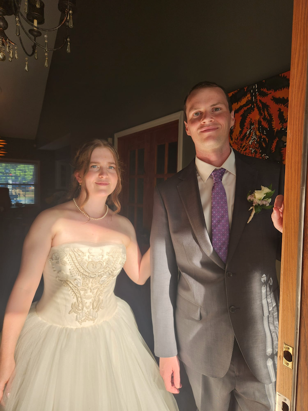
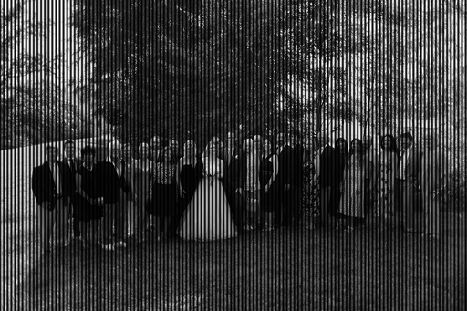
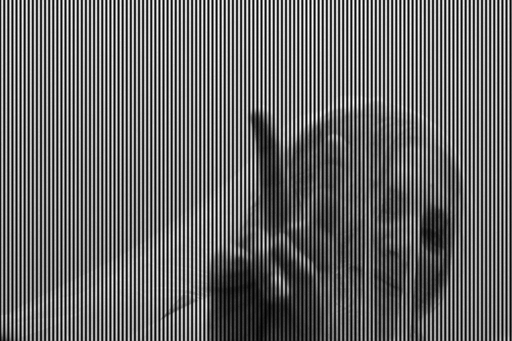
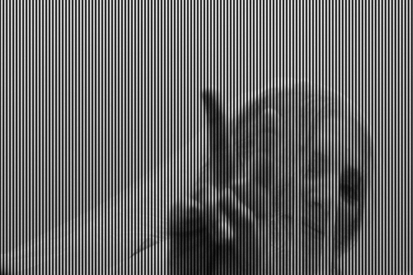
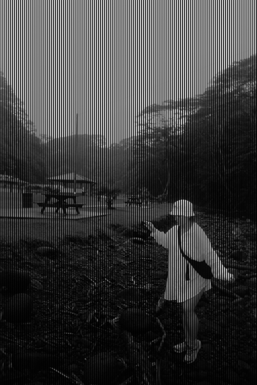
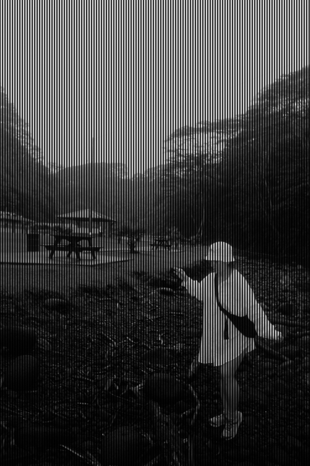

AND SOUND - Special Little CDs
In 1977, the Voyager 1 and 2 spacecraft launched into space.
They look like giant meat thermometers, and are now 14 billion miles away from earth.
Attached to each spacecraft is a golden record. The records include images of earth encoded as sound.
If someone ever finds Voyager 1 or 2, they can use math to decode the audio back into images of earth.

This is what inspired AND SOUND. These mini-CDRs also include images encoded as sound.
It is possible to decode the audio on these CDs back into images.
Here's how it works:
1. I choose an image I think is special.
2. Code converts the image to an audio track.
3. The audio track is burned to the mini-CDR.
4. More code decodes the audio back into image (this process results in a slightly modified image).
Here's an example (using the first image on the CDR).
Code converts the image into audio:
More code opens the audio, and decodes it back into image. Notice the difference?

The process repeats for 5 more images! If you ever find a CD player compatible with mini-CDR (like a desktop computer) you can listen for some hidden tracks like this:
These are the rest of the images.
 

 

Code that encodes image to audio:
# encode_image_to_audio.py
import numpy as np
from PIL import Image
import soundfile as sf
import sys
def encode_image_to_audio(
img_path,
out_wav,
sample_rate=44100,
carrier_freq=1800.0,
line_duration=0.04,
sync_freq=800.0,
sync_duration=0.015,
width_pixels=512,
amplitude=0.9):
img = Image.open(img_path).convert('L')
orig_w, orig_h = img.size
new_h = int(orig_h * width_pixels / orig_w)
img = img.resize((width_pixels, new_h), Image.LANCZOS)
arr = np.array(img) / 255.0
height, width = arr.shape
t_line = np.linspace(0, line_duration, int(sample_rate * line_duration), endpoint=False)
carrier = np.sin(2 * np.pi * carrier_freq * t_line)
t_sync = np.linspace(0, sync_duration, int(sample_rate * sync_duration), endpoint=False)
sync_tone = 0.7 * np.sin(2 * np.pi * sync_freq * t_sync)
audio_blocks = []
samples_per_pixel = len(t_line) // width
for row in arr:
line_audio = np.zeros_like(t_line)
for i, pix in enumerate(row):
s = i * samples_per_pixel
e = s + samples_per_pixel
if e > len(line_audio):
e = len(line_audio)
line_audio[s:e] = amplitude * pix * carrier[s:e]
audio_blocks.append(line_audio)
audio_blocks.append(sync_tone)
full_audio = np.concatenate(audio_blocks).astype(np.float32)
sf.write(out_wav, full_audio, sample_rate)
print(f"Encoded {img_path} → {out_wav}")
print(f"Image size encoded: {width} × {height} pixels")
if __name__ == "__main__":
if len(sys.argv) != 3:
print("Usage: python3 encode_image_to_audio.py input_image output_wav")
else:
input_image = sys.argv[1]
output_wav = sys.argv[2]
encode_image_to_audio(input_image, output_wav)
Code that decodes audio back into image:
import numpy as np
from PIL import Image
import soundfile as sf
import sys
def decode_audio_to_image(
wav_path,
out_image,
sample_rate=44100,
carrier_freq=1800.0,
line_duration=0.04,
sync_freq=800.0,
sync_duration=0.015,
width_pixels=512):
audio, sr = sf.read(wav_path)
assert sr == sample_rate, f"Sample rate mismatch: {sr} vs {sample_rate}"
line_samples = int(sample_rate * line_duration)
sync_samples = int(sample_rate * sync_duration)
total_samples_per_line = line_samples + sync_samples
num_lines = len(audio) // total_samples_per_line
image_data = []
t_line = np.linspace(0, line_duration, line_samples, endpoint=False)
carrier = np.sin(2 * np.pi * carrier_freq * t_line)
for i in range(num_lines):
start = i * total_samples_per_line
line_audio = audio[start:start+line_samples]
pixels = []
samples_per_pixel = line_samples // width_pixels
for p in range(width_pixels):
s = p * samples_per_pixel
e = s + samples_per_pixel
if e > len(line_audio):
e = len(line_audio)
# Multiply by carrier (demodulate) and take average → pixel brightness
pixel_value = np.mean(line_audio[s:e] * carrier[s:e])
pixels.append(pixel_value)
image_data.append(pixels)
arr = np.array(image_data)
# normalize to 0-255
arr = arr - arr.min()
arr = arr / arr.max() * 255
arr = arr.astype(np.uint8)
img = Image.fromarray(arr, mode='L')
img.save(out_image)
print(f"Decoded {wav_path} → {out_image}")
print(f"Image size: {arr.shape[1]} × {arr.shape[0]}")
if __name__ == "__main__":
if len(sys.argv) != 3:
print("Usage: python3 decode_audio_to_image.py input_wav output_image")
else:
wav_file = sys.argv[1]
out_image = sys.argv[2]
decode_audio_to_image(wav_file, out_image)